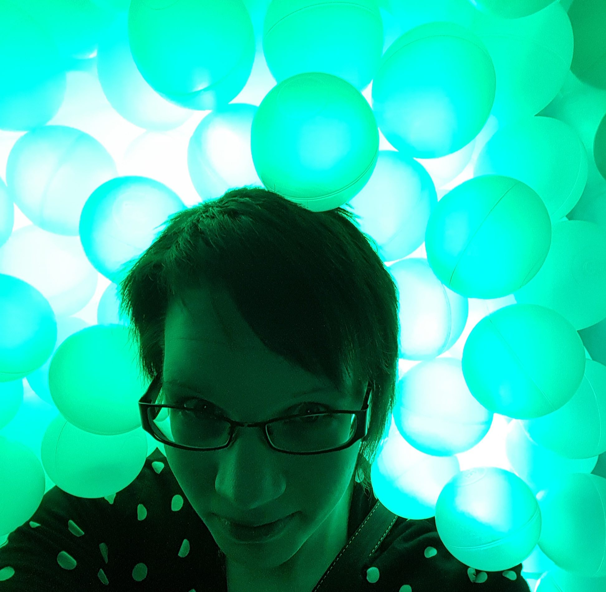

Kuka on Mari?

Olen sopivassa suhteessa sekä introvertti että sosiaalinen, rento ja rempseä mimmi. Rakkain harrastukseni on tanssi, ja lajini on dancehall. Tanssin lisäksi kuntoilen esim. kahvakuulaillen tai kuntosalilla. Pelaan silloin tällöin myös video- sekä lautapelejä. Valtaosa vapaa-ajastani kuluu tällä hetkellä ohjelmoinnin opettelussa. Rakastan musiikkia, ja tykkään käydä paljon erilaisilla keikoilla ja festareilla.